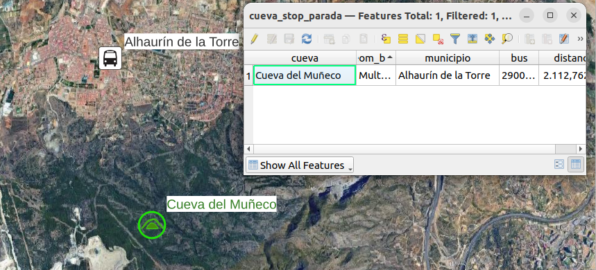

shp2pgsql -D -I -s 25830 'farmacias castellon.shp' farmacias_castellon | psql -p 25432 -U docker -d gis -h localhostK-Nearest Neighbor: Where is the closest pharmacy?
Transform
PostGIS
QGIS
TYC GIS-IMFE
Exercise 4: K1N
PostGIS
The exercise is the following:
Exercise 4 - Determine which is the closest pharmacy to each school in Castellón de la plana.
Layers to be used:
- COLEGIOS_CASTELLON.shp
- farmacias castellon.shp

Import: Importing shp to PostgreSQL using SHP2PGSQL
Firstly, The geographic system of reference (parameter -s) for each .shp file is checked before finding out that it was 25830. Secondly, a terminal is opened in the directory where the shp file is located.
For schools:
For pharmacies:
shp2pgsql -D -I -s 25830 -W "LATIN1" COLEGIOS_CASTELLON.shp colegios_castellon | psql -U docker -d gis -h localhost -p 25432As a reminder, -D and -I indicates to dump the data instead of copying, and apply spatial Indeces to speed up queries. In the last case, -W indicate the font encoding, which was “LATIN1”. In other ocassion, for spanish speaker countries, ‘WINDOWS1252’ or ‘CP1252’ can be an option of the possible formats.
Transform: Obtaining the closest pharmacy using LATERAL
The LEFT JOIN LATERAL allowed to use data from the query next to subquery to for each pharmacy, find the closest school.
CREATE TABLE school_pharmacy_castellon AS
SELECT DISTINCT ON (c.name)
c.name as school,
f.name AS pharmacy,
f.geom <-> c.geom AS distance,
f.geom AS geom_pharm,
c.geom AS geom_school
FROM colegios_castellon AS c
LEFT JOIN LATERAL
(SELECT name,
geom
FROM
farmacias_castellon AS f
ORDER BY
f.geom <-> c.geom
LIMIT 1) AS f ON trueQGIS
Import plugin
Apply parameters
For IMFE: Málaga case
Import data
The exercise is slightly changed: Exercise 4 - Determine which is the closest bus stop to each cave in Málaga
- Bus stops (from the andalucian transport and communication’s WFS more WFS available at DERA )
- Caves
Query
CREATE TABLE cueva_stop AS
WITH agp_cuevas AS (
SELECT
nombre AS cueva,
municipio,
geom
FROM
ja_cavidad
WHERE
provincia ILIKE '%Laga'
AND
tipo = 'Cueva'
AND acceso = 'Horizontal'),
agp_bus AS (
SELECT
id_parada,
geom
FROM
"JA_bus"
WHERE
provincia ILIKE '%laga')
SELECT DISTINCT ON (cueva)
agp_cuevas.geom AS geom_cueva,
cueva,
c.geom AS geom_bus,
agp_cuevas.municipio,
c.id_parada AS bus,
agp_cuevas.geom <-> c.geom AS distance
FROM
agp_cuevas
LEFT JOIN LATERAL
(SELECT id_parada,
geom
FROM agp_bus
ORDER BY
agp_bus.geom <-> agp_cuevas.geom
LIMIT 1) AS c ON true;